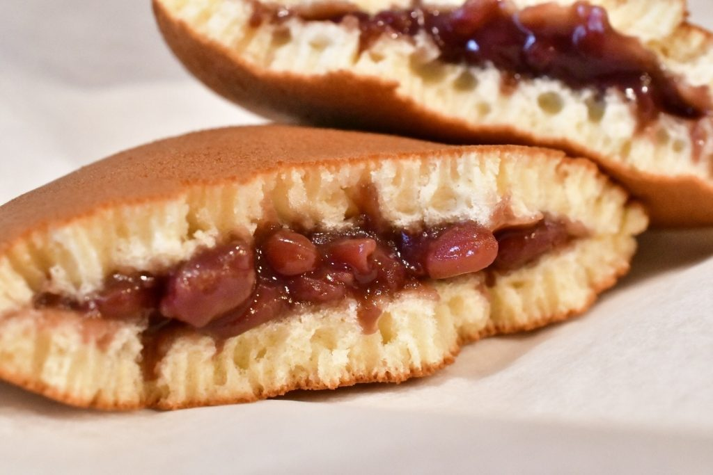

萌芽期
和菓子的範圍相當寬廣，在日本舊稱為「菓子」，源自古代日本人將天然的水果及樹木的果實加工而成的主食外的果腹食品，如柿乾，果乾，米團。 現在和果子的原型起源自奈良時代起從唐朝傳入的「唐菓子」。根據成書於日本延長年間（923-930）的《倭名類聚抄》記載，當時有八種以米捏成的「唐菓子」，分別是：梅枝、桃枝、餲餬、桂心、黏臍、饆饠、鎚子、團喜以及果餅14種。同時在這時期，砂糖，糯米製菓，油炸點心傳入傳入日本。此時唐菓子的用途是單純用來祭神所用的祭品。平安時代初期空海大師於西元806年將煎餅製法引進日本，提升糖、米、糯米、小麥粉等素材的應用高度。
發展期
鎌倉時代從宋朝學法的僧人傳進羊羹類和饅頭類的食物以及茶苗，也帶回來「喝茶搭配吃點心」的習慣，如著名的聖一國師。由於當時日本食肉文化不普及，加上宗教因素，許多原來由肉類製成的食物改用紅豆，小麥粉替代，如羊羹。 室町時代經過口味調整後，逐漸發展出自己的特色甜點。經過改良過後的蔴糬外皮變得色彩豐富，精緻甜點的造型除了有中國元素的桃子、兔子造型，以櫻花、葉子等植物造型的和式甜點也加入其中。大小從原來的掌心大小，變為一口就可吃掉的大小。在日本戰國時代和菓子也隨著茶道文化的興起而流行於公家與武家之間。隨著茶聖
千利休發展的茶道興盛，和茶道相依相存的和菓子也蓬勃了起來。安土桃山時代，葡萄牙人帶來 了具有民族特色的點心，如蜂蜜蛋糕、金平糖、麵包等等。由於日本稱他們為南蠻人，而帶來的 點心，就稱為南蠻菓子。這些南蠻菓子帶給了和菓子文化新的視野與技術，尤其這時對於麵粉類的 和菓子有相當的發展。
成熟期
到了江戶時代的菓子分為兩派別，分別是發源地為京都，著重著五感的極致的京菓子和 江戶為主外表平實，風格自由的上菓子戶別苗頭。兩派之間的激烈競爭，帶動了日式糕點製作技術的大幅躍進。 自明治時代起，為了與歐洲傳入的糕點區別，因此改稱為「和菓子」。現在，具生命力的和菓子成為日本獨特的糕點文化。隨著季節、地點的不同，日本各地皆有不同的銘菓(土產菓子)，包括各種由水果經各種調理方式之後所製出的點心，並在各地發展了不同特色。